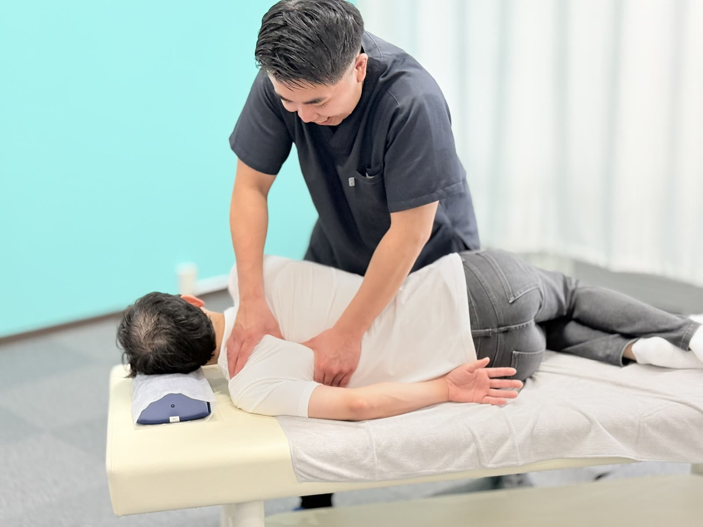
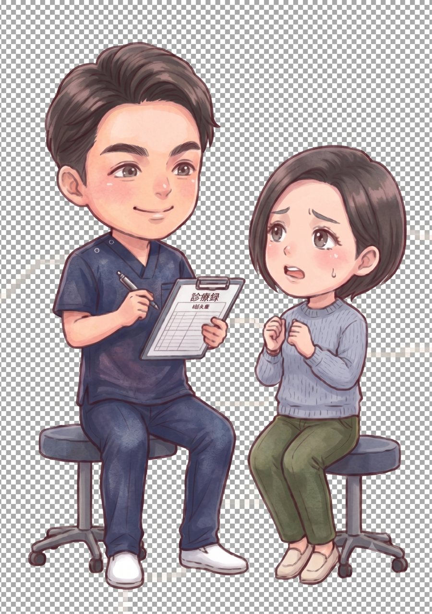
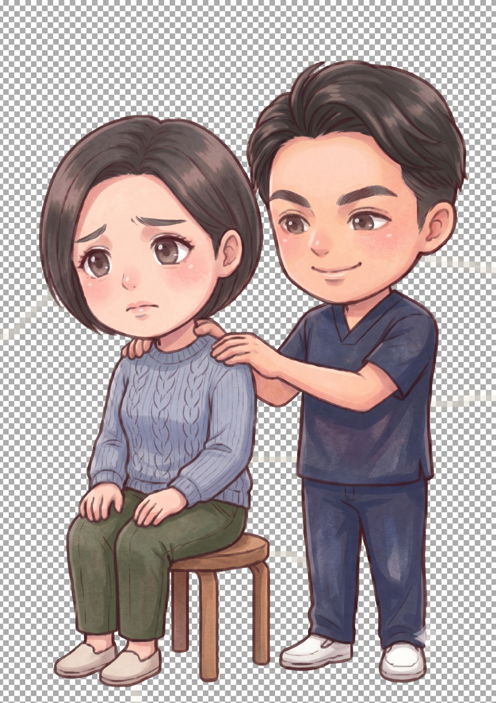
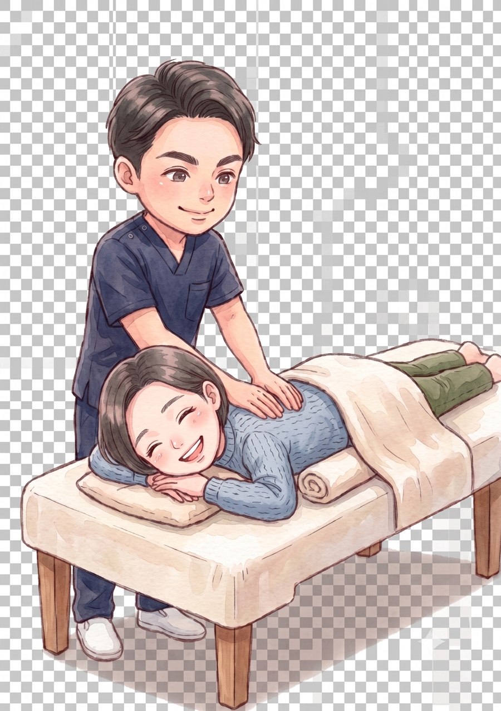

お尻の奥から太ももの裏、ふくらはぎへと走る痛みやしびれ。身体の中で最も太く長い「坐骨神経」が、どこかで圧迫されているサインです。
坐骨神経は腰から足先まで伸びる、鉛筆ほどの太さもある大きな神経。どこで圧迫されているかを見極めることが、改善の第一歩です。
実は「坐骨神経痛」は病名ではなく、坐骨神経の通り道に出る痛み・しびれの総称です。代表的な原因は3つあります。
お尻の奥にある梨状筋が硬くなると、そのすぐ下（人によっては中）を通る坐骨神経を圧迫します。デスクワークや運転で座り続ける方に最も多いタイプで、骨盤の歪みで梨状筋に負担が集中していることがよくあります。
背骨のクッション（椎間板）が飛び出して神経の根元を圧迫するタイプ。前かがみで症状が強くなる傾向があります。
神経の通り道が狭くなるタイプで、中高年に多く、歩くと痛み・休むと回復する「間欠性跛行」が特徴です。

多くの坐骨神経痛に共通しているのは、骨盤の歪みと、お尻・腰まわりの筋肉の過緊張です。当院では、①検査で圧迫ポイントとタイプを見極め、②硬くなった梨状筋・お尻・腰の筋肉を丁寧にゆるめて神経の通り道を確保し、③負担の根源である骨盤の歪みを矯正します。神経の興奮を抑えるハイボルテージなどの物理療法も状態に合わせて併用します。

しびれの範囲・出るタイミング・楽になる姿勢を詳しく伺い、タイプのあたりをつけます。

整形外科学検査と姿勢分析で、神経がどこで圧迫されているかを確認。状態を丁寧にご説明します。

お尻・腰の筋肉をゆるめ、骨盤矯正で土台から改善。座り方や自宅ストレッチなどの再発予防策もお伝えします。
その通りで、「坐骨神経の通り道に沿って出る痛み・しびれ」という症状の名前です。原因は腰椎ヘルニア・脊柱管狭窄症・梨状筋症候群などさまざまで、原因によってアプローチが変わるため、まず見極めが大切です。
おすすめしません。しびれの原因は多くの場合、しびれている場所ではなく腰や骨盤側にあります。悪化する場合もあるため、まず状態を検査させてください。
原因や程度によります。筋肉の緊張や骨盤の歪みが関与しているタイプは施術での改善が期待できます。施術の適応かどうかは検査のうえ正直にお伝えします。